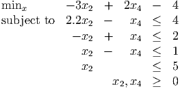
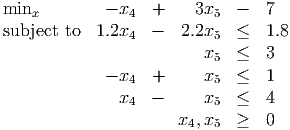
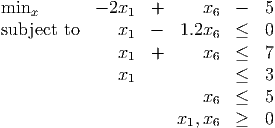

- a.
- B:
 
- b.
- C:
 
- c.
- E: There are three tableaus for this point. You only need to choose one. We choose
E1.
 
In optimal form, with basic variable x2 = 0, nonbasic variable x1 = 0. Have c1 = 0, but do not have alternative optimal solutions (don’t even have any other feasible solutions).
Pivot on a24, the 2 in the second constraint.
We bring x2 into the basis. From the minimum ratio test, x7 leaves the basis.The pivot matrix is
This gives tableau T1 = Q1T. Calculating the reduced costs gives
Choose x3 to enter the basis, so calculate the x3 column:
The minimum ratio tells us x3 replaces x5 in the basis. The pivot matrix is
This gives tableau T2 = Q2Q1T. Calculate P2 = Q2Q1:
The updated tableau is T2 = P2T. Calculating the reduced costs gives
Choose x1 to enter the basis, so calculate the x1 column:
From the minimum ratio test, x1 replaces x3 in the basis. The pivot matrix is
This gives tableau T3 = Q3Q2Q1T. Calculate P2 = Q2Q1:
The updated tableau is T3 = P3T. Calculating the reduced costs gives
Hence the optimal solution is x* = (5, 12.5, 0, 0, 0, 7.5, 0)T , with value z* = -2305.
(Note: all these pivots are in the text on the full tableau, so you can check your work. Note also, as we will see later, the variable columns for Q1, P2, and P3 are exactly the columns for x5, x6, x7 in the full tableau.)
The optimal BFS are x = (5, 0, 0)T and x = (0, 5, 0)T .
If the pivot left x unchanged then it would be degenerate.